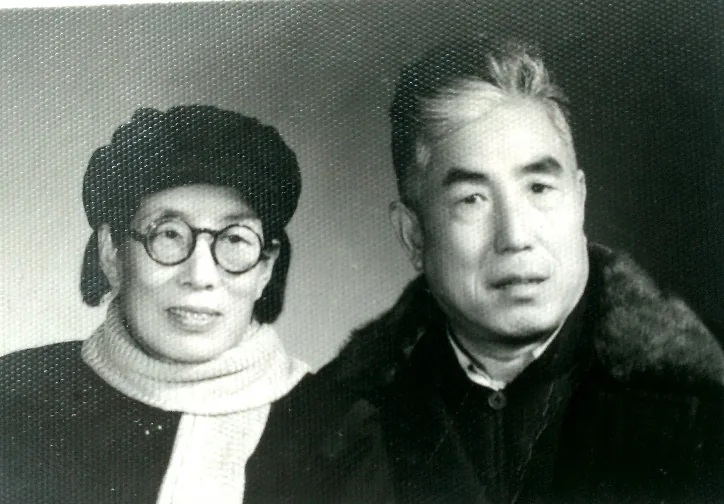

六 母亲的冤案
小弟出生六个月，家庭横遭不幸。妈妈被掖县沙河镇政府捏造罪名抓进了看守所。家中的爸爸带着四岁的大弟、两岁的小妹、六个月的小弟弟，乱套了。三个大女儿，老大远在益都上师范，三女儿在潍坊上初中，唯独我近在掖县三中念初三，还差两个多月毕业。走读的同学捎信叫我别上课了，赶紧回家。我以为妈妈又病了，顾不得请假，跑步八里路赶回了家。进门看到的是诊室的封条，炕上哭泣的弟弟妹妹。爸爸紧张得一宿没睡，思绪混乱地说着一些让我摸不着头脑的话。我问小弟弟在哪里，他才猛然醒悟到，孩子从昨晚没捞着吃奶饿坏了，刚才让邻居奶奶抱去喂了。现在妈妈被扣押，这不是要把小孩子饿死吗？这突然的变故，让我一个不经事的孩子也懵了。幸亏爸爸指点着，教我去镇政府、法院问“为什么抓人？小孩子喂奶怎么办？共产党是不让饿死人的......”听了爸爸的话，我就直奔镇政府去问为什么，那帮混蛋推说不知道，叫我去问公安局、县法院，但他们也都推说不知道。他们像踢皮球一样把我踢来踢去。我急眼了，想到个办法，趁法院信访办公室里人比较多，大家都是在排号等待办事的。我就站在他们的办公室大声控诉起来： “人民法院不管人民死活，我妈妈无缘无故被抓起来，家里有我六个月的小弟弟，饿得哭了一宿了，到现在他们谁都推说不知道，不管！这还是不是共产党的天下？” 好多人围住了我，正巧有一个同学在那里办事，我便借机大声向他讲述昨晚发生的一切。因爸妈在沙河行医多年口碑不错，好多人跟着骂起娘来。我还在不停地控诉叫喊，整个办公室里乱套了。半天出来一个干部，哄着我说：“我们确实不知道你家的这件事，刚才我打电话问有关单位了，他们说先让你抱着弟弟去看守所，让你妈妈喂奶。不管什么问题，不能让小孩子饿着，其他事等调查清楚再说。” 说着他要走，我一把拽住他说：“你得说清楚，我到那里去找谁？一天去喂几次？什么时间去？......” 我本来还有很多想问，因害怕时间太长，急忙回家抱起小弟，跑到沙河镇西郊公安看守所去，让妈妈给小弟喂奶。一夜的时间，妈妈涨奶疼得厉害，更难受的是百思不得其解，究竟得罪谁了？妈妈冤屈地掉泪，我更是哭得不行。半个小时的哺乳时间，在他们监视下，娘俩什么也不能说。从妈妈的眼神和手势里，我似乎有点领悟，又猜不透是什么。

进门看到的是诊室的封条，炕上哭泣的弟弟妹妹。

急忙回家抱起小弟，跑到沙河镇西郊公安看守所去，让妈妈给小弟喂奶。
回家后对爸爸说了妈妈的情况，爸爸的紧张情绪稍微放松了一些，给我预备了一块铅笔头，几张烟卷盒的包装纸，外加一小包牛肉干。晚上抱着小弟去喂奶时，藏在弟弟贴身的襁褓里。妈妈边喂奶边摸小弟的身体，发现了, 趁看守的不注意装到自己的兜里。就这样，我去时带点吃的用的，回时把妈妈写下的在狱中被提审时问到的问题带出来。逐渐掌握了大概情况后，爸爸把所有涉及到的所谓的受害人，逐一作了访问。记得重点是说妈妈的诊所用六零六违禁药，打胎杀人。受害人向爸爸哭诉了被逼撒慌作伪证的经过。综合所有问题，基本上属于莫须有的捏造和陷害。
我们不能等待了，开始反击。爸爸写好了上诉材料，让姐姐去莱阳中级法院上告。我就每天早上抱小弟弟去妈妈那里喂奶，回来再带上四岁的大弟、二岁的四妹和六个多月的小弟弟，去镇委办公室的门口静坐。谁出来撵我们，我就跟他们要妈妈，问他们为什么不赶快处理镇政府陷害我家的问题，为什么人民政府不保护人民。结果他们以后谁也不吱声，任凭我带着他们仨呆在门口。几天过去发现这个方法不好使。我便换了方式，我自己专找人多的地方，不管是机关单位还是群众聚会，我瞅准机会就去述说冤屈，大声疾呼我家是无辜的，希望借群众舆论给坏人施加压力。卫生科、镇政府我不去，专门找他们的上级部门县公安局法院、县委县政府去告状。我像疯子一样乱碰乱撞，哭诉冤屈。
后来可能他们也觉得这样太影响政府的形象。有一天我和姐姐又去法院催问哪天放我妈妈，法院的那个王院长吹胡子瞪眼吓唬我俩，叫我们老实在家呆着，等待调查清楚再处理。我便跟他顶起来，质问他们：“什么时间去调查？什么时间结案？明摆着的冤案你们为什么不快解决？我的弟弟妹妹们这么小，我们耽误上学，怎么等？等到哪天？”几个问题一问，他更火大了，拍着桌子吼起来。我根本不怕，几步走到他面前，同样使劲拍着他的桌子，问他：“你还是不是人民的干部？你是怎么为人民服务的？！” 看到吓不住我，他的同事们也没人来帮他。他气得说不出话来，浑身哆嗦。我更是一步不饶连哭带喊，愤怒到了极点。不记得当时是怎么出的法院，光记得出了门，我扑到姐姐怀里，姊妹俩抱头痛哭一场！后来妈妈说，那个王院长曾经找她问过：“你那两个女儿，你最亲哪个？” 妈妈说：“我亲二的。” 他说：“你应该亲大的。你二姑娘属牛的，能顶死人！” 妈妈说：“对，她就是属牛啊。”
等到了三十多天时，妈妈已经无奶喂小弟弟，自己也病倒在牢房里。我们的办法也用尽了，妈妈就是出不来。政府和法院不管不问，就这么抻着，怎么办？当时姐姐和我，三个小弟弟妹妹都在家，我们决定演一出苦肉计打破僵局。晨起，爸爸早早离家出门了，我们在家大哭大喊。邻家看我们五个孩子哭得可怜，妈妈被扣押，爸爸又不见了，家里没法儿过了。很快政府来人了解情况，我们就编瞎话，说爸爸因为长时间忧忿得病了，精神很不正常，不知他到哪里去了，怕他想不开投井自杀。我们就故意装样子，抗着竹竿带着绳子去野地里找井打捞。我们这一闹腾，群众的反应大了，政府的头头们也呆不住了，又派人来看了家里的情况，一群孩子叫苦连天，苦苦挣扎；狱中的妈妈也病情严重。他们如果还以“调查”为名，继续往后拖着就行不通了，便很快结了案，带上判决书，把病重的妈妈抬着送回了家中。判决书到手，我们有了被冤枉陷害的文字材料，打官司有根据了。决心待妈妈身体好了，到上级政府伸冤告状，讨个公道。
为了妈妈早日恢复健康，我必须休学在家，看顾弟弟妹妹，照顾妈妈。经过半年的调养，妈妈的身体日渐好转。为了洗清冤屈争口气，爸妈决定要去省里告状, 因为明摆着，沙河镇、掖县城和莱阳地委，他们串通一气不讲理了。
一九五六年的春天，小弟弟一岁多了，妈妈的身体也好些了。爸妈准备了充足的资料出发去了济南。那时候，爸妈的老战友们还有不少，省妇联主任王月村、省委的陈梅川、卫生厅的王哲等都是当年曾亲自驱车到沙河，动员爸爸去省政府参加建政发展的人。看到爸妈来了，都说了同一句话：“看来，你真是在掖县混不下去了。当年我们去请你到省里来参加建政工作，你死活不干，还说‘不吃倒那片青山，坚决不动弹’。现在怎么样？” 当听了爸妈的诉说后，他们大为震惊，没想到地方政府竟这样胆大妄为，无视国家的法律政策。经过商量，很快由省级司法机关组成了综合调研组，直接深入地方调查处理。经过走访调查，最后裁定纯属冤案，宣告妈妈无罪, 要求地方政府赔礼道歉，给与名誉损失赔偿。爸爸亲笔把仲裁书用大红纸以大字报的形式写出来，贴到大街上。让沙河镇的群众第一次看到了“大字报”，知道了我家遭受的冤案。据说那是解放建政以来山东省第一起民告官的案子,省政府非常重视，特别指示要求莱阳地委、掖县县委把此案件当作组织地方政工干部学习讨论的重要案例。

爸爸亲笔把仲裁书用大红纸以大字报的形式写出来，贴到大街上。
爸爸的大字报，引起了群众的极大兴趣，原来老百姓受了冤屈，可以越级告状打官司。这让镇、县两级政府的有关人员很恼火，更加恨透了我家。由于当时国家正处在合作化、改造工商业的阶段，凡是私营工商业都走合作化道路。沙河镇的大大小小的中医西医必须组织在联合诊所里，而合伙陷害我妈妈的那些坏蛋，正好当了组织者、领导者，趁此机会再加害是肯定的。爸妈当即决定逃离沙河。恰好平度县灰埠镇公社的社长慕名来找妈妈治病，了解了当时爸妈的情况，十分同情, 便以“立明诊所”下乡助农的名义，派来三辆大马车，把家中一切物品，连同大人孩子，在半天时间内一次完全搬到了平度县。平度县和掖县是平级单位，沙河那些坏蛋无法再加害爸爸妈妈了，但我却成了替罪羊。
